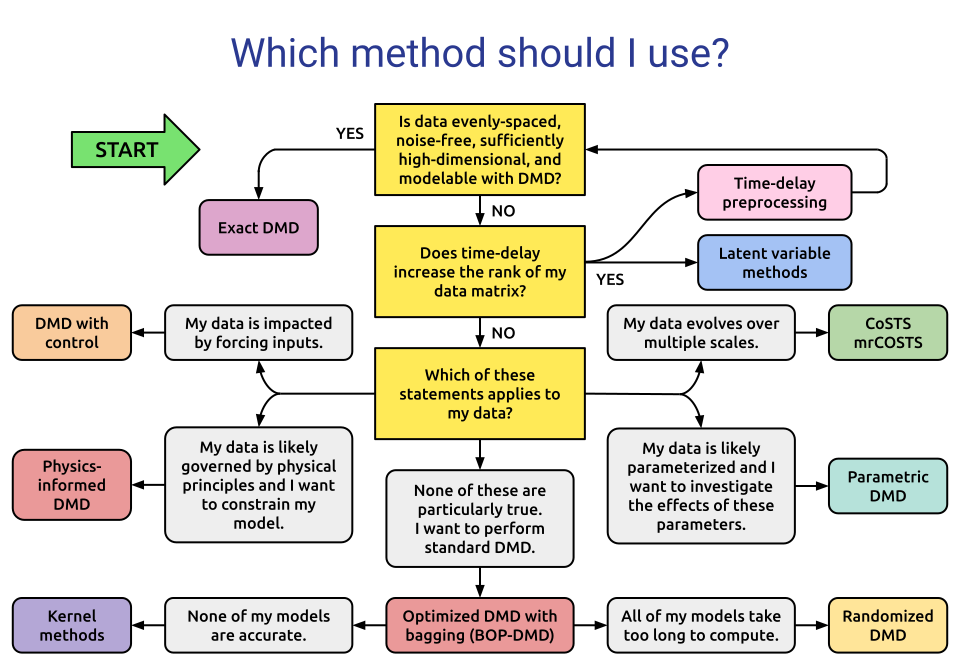

DMD Variant Guide#
Not sure which DMD variant to use? The flowchart below will help you choose the most appropriate method based on your data and problem type.
{kind=link}

Guide to DMD Variants#
Noise-Robust Methods#
Use these when your data contains measurement noise:
Forward-Backward DMD — corrects for sensor noise by combining forward and backward DMD.
Total Least-Squares DMD — de-biases DMD for noisy datasets.
Optimal Closed-Form DMD — low-rank DMD with an exact, tractable solution.
Subspace DMD — stochastic Koopman analysis for noisy data.
Physics-Informed DMD — incorporates known physical constraints.
Optimized DMD — uses variable projection for improved accuracy.
BOP-DMD — adds bagging to Optimized DMD for uncertainty quantification.
Data Compression and Sparsity#
Use these when working with large datasets or seeking sparse representations:
Compressed DMD — reduces computational cost via random projections.
Randomized DMD — efficient DMD for very large datasets.
Sparsity-Promoting DMD — promotes sparse mode selection.
Including Inputs and Control#
Use these when your system has external inputs:
DMD with Control (DMDc) — incorporates the effect of control inputs.
Transient and Multiscale Dynamics#
Use these for systems with multiple timescales or transient behavior:
Multiresolution DMD — captures dynamics at multiple time scales.
Higher Order DMD — for 1D snapshots or delay-embedded systems.
Parameterized Systems#
Use these when your system depends on parameters:
Parametric DMD — forecasts parametric dynamical systems.
Kernel and Nonlinear Methods#
Use these for nonlinear systems:
Extended DMD — kernel-based method for Koopman spectral analysis.
LANDO — kernel learning for robust DMD with nonlinear disambiguation.